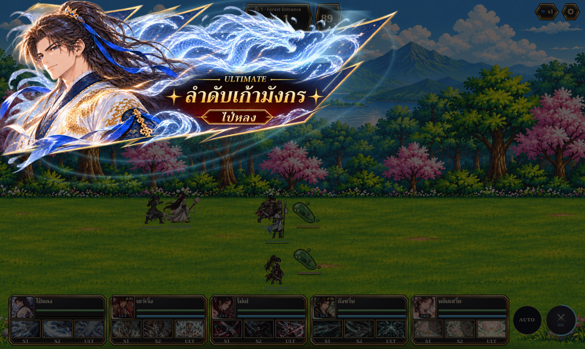
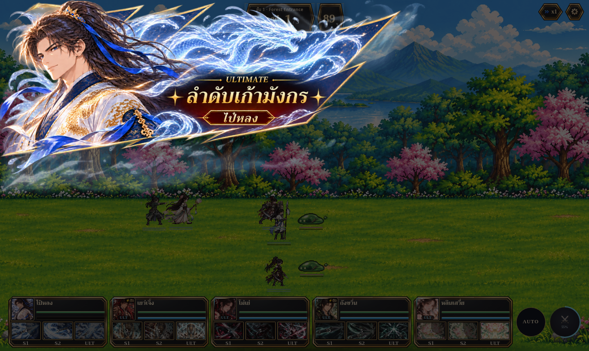
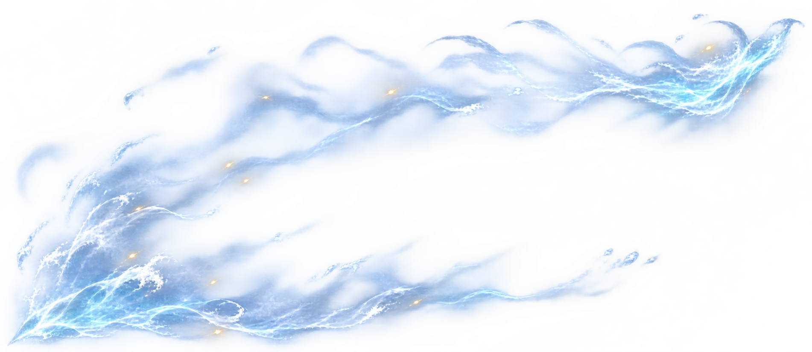
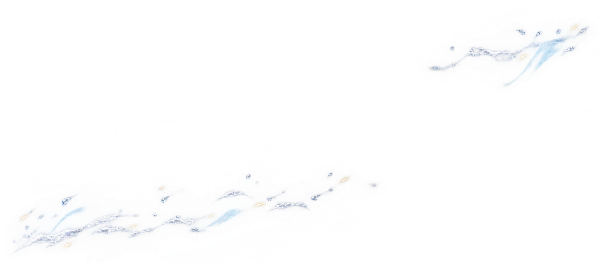

ไป๋หลง — VFX แยกเลเยอร์จากภาพที่ gen
หมอกกระแสน้ำ + ฟองและละออง เคลื่อนต่างจังหวะกันแทนวงรีกับเส้นเวกเตอร์เดิม ภาพตัวละคร กรอบ และฟอนต์เดิม
ก่อน / หลัง · ภาพเกมจริง

ก่อน · วงรีและเส้นที่ผู้ใช้ไม่ชอบ
หลัง · เลเยอร์ที่ gen แยก · ภาพจริงหยุด CSS ที่ 400 ms เพื่อดูรายละเอียดภาพต้นฉบับ VFX แยก · พื้นหลังโปร่งใส

กระแสน้ำและหมอก
ฟองและละอองน้ำสองภาพนี้เป็นอาร์ต VFX ที่ gen แยก ส่วนคลิปด้านบนอัดจากเกมที่รันจริง